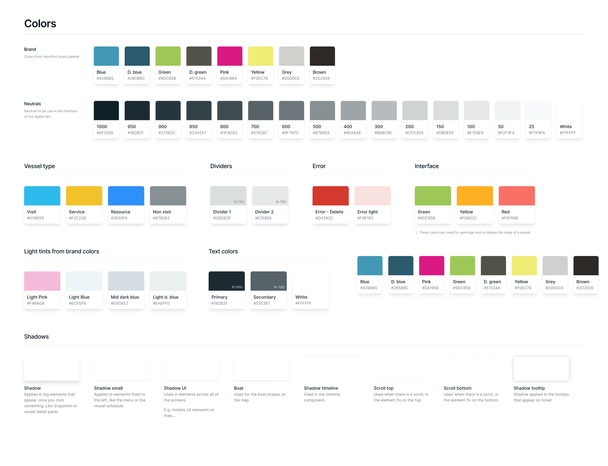
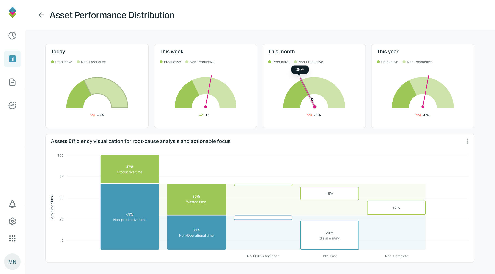
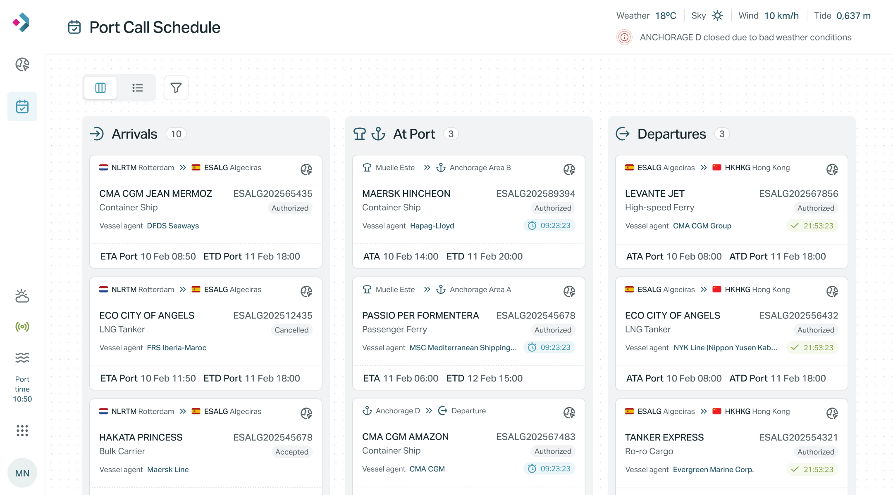
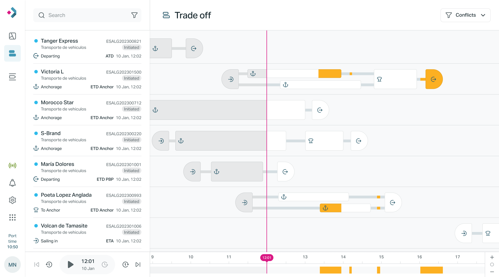
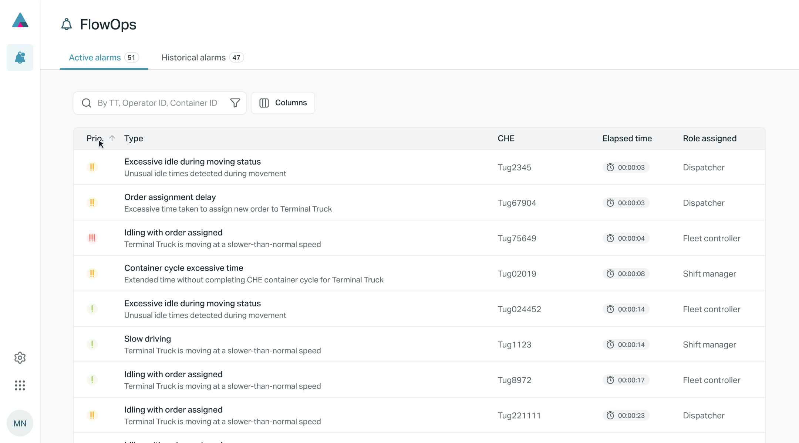

AI-driven UX innovation for maritime SaaS
At NextPort, the Technology & Innovation SaaS platform by Moffatt & Nichol, I designed user-centered digital products that bring artificial intelligence into the complex world of port operations. Together with my team, I explored user and market needs, translating them into practical, efficient and visually appealing solutions, leading the creation of intuitive experiences for highly complex environments.

Groundbreaking design system
A pioneering design system, built to unify digital experiences and drastically simplify daily workflows. It empowers users with clarity, consistency and efficiency across every interface.
- Streamlined navigation tailored to port operations
- Consistent, human-centered visual language
- Scalable component library ensuring accessibility and faster development


Adaptive dashboards
Highly adaptable dashboards tailored to diverse needs, empowering each user to visualize, prioritize and act on the information that truly matters. This personalized approach turns complex operations into simple, intuitive workflows.
- Custom layouts aligned with user roles and daily tasks
- Real-time data visualization improving decision-making
- Modular widgets that adapt to individual workflows
Work philosophy
A user-centered experience framework for digital tools in the port industry, grounded in research, usability testing and real user feedback. The result: interfaces that feel natural, reduce cognitive load and let users complete tasks effortlessly.
- Research-driven design decisions based on real user behavior
- Streamlined workflows that minimize friction and complexity
- Inclusive design principles ensuring accessibility for all user types

Inside the product
The screens behind the platform
A tour through the core modules I designed. Live port maps, AI-assisted berth planning and smart operational alarms...
A real-time digital twin of the port and terminals
The heart of NextPort: a live map where every vessel, resource and service is tracked in real time. Selecting a vessel opens its full event timeline, departures, arrivals, anchorage, enriched with AI-powered ETAs and delay forecasts, so operators always know what is happening and what comes next.
- Live vessel tracking with speed, route trace and status at a glance
- Event timeline blending confirmed data with AI forecasts
- Time machine playback to navigate past and predicted states


Terminal operations, down to every crane
Zooming into the terminal reveals a second layer of the digital twin: quay cranes, yard cranes and terminal trucks moving live over the berth. Color-coded states let supervisors spot bottlenecks instantly without leaving the map.
- Equipment status legible at any zoom level
- Alarm states surfaced directly on the map, in context
- Unified timeline to replay any moment of the operation
Every port call, at a glance
A kanban-style board that turns the chaos of daily port traffic into three clear columns. Each card condenses the essentials of a visit.
- Board and table views for different working styles
- Status system designed for instant scanning.
- Contextual weather alerts affecting berthing decisions


AI-assisted berth planning
A calendar of the port's berths where planners allocate vessel visits. Flipping the Predictions toggle overlays AI-suggested slots on top of the confirmed plan. Clearly differentiated with a dashed visual language so human decisions and machine suggestions never get confused.
- Day, week and month granularity over every berth
- Distinct visual grammar separating confirmed visits from predictions
- Unallocated vessels queue keeping nothing off the radar
Resolving berthing conflicts with AI
The most complex problem in the product: when several vessels compete for the same berth, tugs or anchorage, the Trade Off view lays every movement on a shared timeline and exposes the constraints behind each AI recommendation.
- Timeline of stops and movements per vessel, past and future
- Conflict filter isolating only the decisions that need attention
- Explainable constraints building trust in AI suggestions


From data noise to actionable alarms
This module watches the whole operation and raises an alarm only when a pattern deserves attention. Each alarm arrives prioritized, timed and routed to the right role, turning monitoring into action.
- Priority system tuned to minimize alert fatigue
- Role-based routing so every alarm has an owner
- Historical view and fully configurable alarm rules
My process
User-centered methodology
Design thinking adapted to the industrial and port context — solutions that truly work for real users.
Research
Understanding the problem through research, data analysis and user interviews.
Definition
Synthesizing findings to create personas, journey maps and key problem statements.
Ideation
Generating multiple creative solutions through brainstorming and sketching.
Prototyping
Creating prototypes of varying fidelities to quickly validate concepts.
Testing
Validating solutions with real users to ensure their effectiveness.
Iteration
Refining the design based on feedback and metrics for continuous improvement.
Skills
UX toolkit
Technical skills combined with strategic thinking, for experiences with real business impact.
// Design tools
// Research & testing
// Dev & collaboration
// Tools
// Certifications
- Artificial Intelligence Micro-Certification (AIC) 2025
- Google UX Design Certificate 2022
- Design Thinking Certification (IDEO) 2021